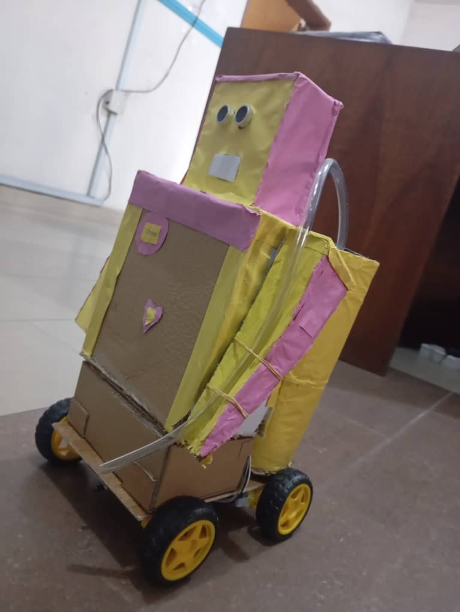
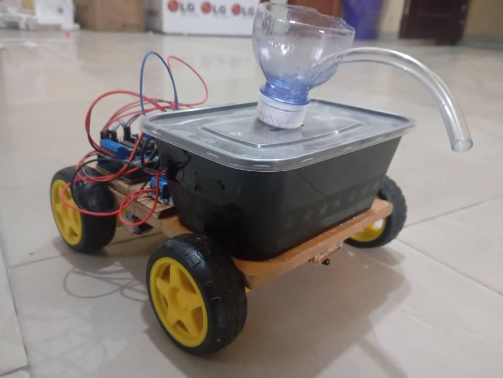
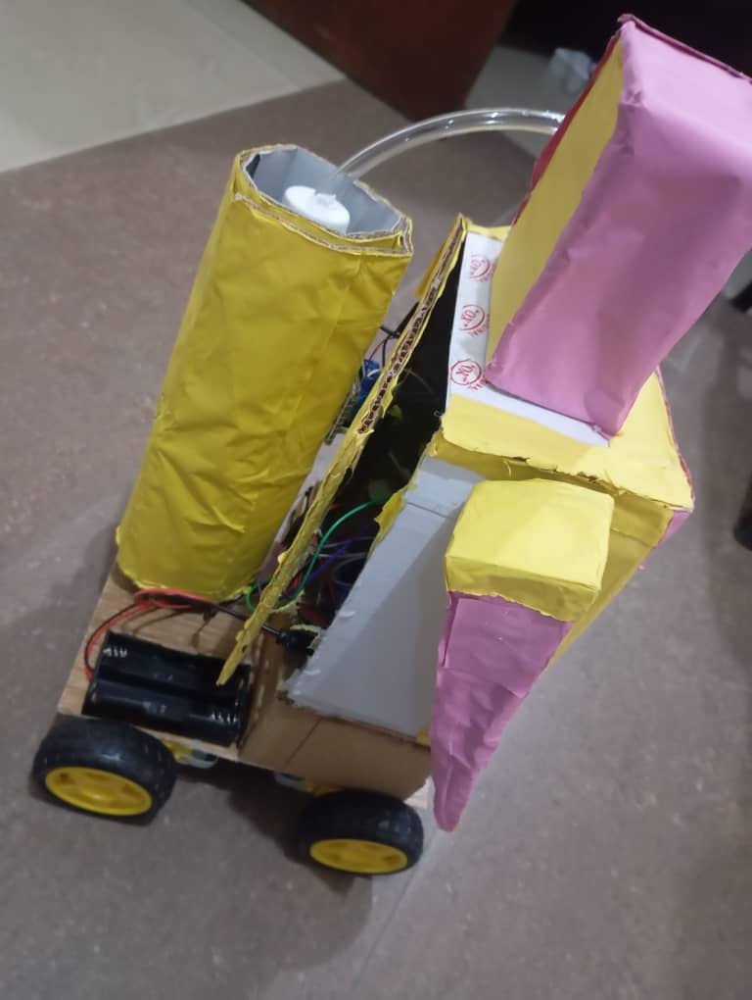

Pan-and-tilt firefighting robot that checks whether its spray worked
A low-cost wheeled robot aims a two-axis nozzle arm, then measures whether the fire is actually responding and re-targets if it is not.
Scope. The results below come from a Python simulation with assumed sensor models and a fixed random seed (376); the code is released. The camera and AI computer, the sensors, the pan/tilt arm and the pump relay have each been assembled and are being integrated onto the mobile base, but closed-loop hardware trials are not complete. No hardware performance is claimed on this page or in the paper.
The problem
Firefighting robots usually separate seeing from spraying, aim a nozzle that cannot move, or assume that switching the pump on means the fire is being put out. Systems that do close the loop tend to rely on thermal cameras, LiDAR and industrial water cannons, which puts them out of reach for many hospitals, factories and homes. This project asks how much of that loop can be kept on inexpensive hardware.
The RAPS-SOF control loop
RAPS-SOF stands for Risk-Adaptive Perception-to-Suppression with Suppression-Outcome Feedback. It treats suppression as a cycle of perceiving, acting and evaluating, not a single aim-and-spray step.
- DetectA YOLOv8 detector on a Raspberry Pi 5 finds fire regions and gives a confidence score.
- FuseVision, flame, infrared temperature and gas readings are combined, each weighted by how reliable it currently is. Only the camera gives a bearing, so bearings are never averaged across sensors.
- Choose a targetCandidate fires are scored on fused confidence, size, heat, distance and platform stability, minus a penalty for any region where an earlier aim failed.
- AimTwo servos, pan and tilt, point the nozzle. If vision is unreliable, the arm sweeps and the flame sensor and thermometer on the nozzle find the response peak.
- Spray and confirmThe pump runs in short pulses, and a flow sensor confirms that water is really leaving the nozzle.
- Check the effectTemperature and flame readings are averaged before the pulse and again after a short pause, and the change becomes an effectiveness score.
The effectiveness score uses two thresholds. A high score means the pulse worked. A low score means it did not, and the robot stores the failed aim, penalises that direction, re-estimates the fire from a fresh frame, searches a few degrees either side if needed, and tries again. A score in between is undecided and triggers one more pulse. After three ineffective pulses in a row the robot stops spraying, raises an alert and retreats where possible, since the cause may not be aim at all. If flow is not confirmed, that is treated as a hardware fault such as a blocked nozzle or an empty tank, not as a failed suppression.
What is and is not new
Multi-sensor fusion and feedback-controlled suppression both have precedent, and the paper says so. McNeil and Lattimer showed autonomous feedback control of aim, and Ren and colleagues reached sub-second extinguishment at up to 13.5 m with depth and LiDAR sensing on a Jetson-class computer. The contribution here is integrating these ideas on inexpensive hardware, with a per-pulse check of the suppression outcome that triggers a defined re-targeting rule for an articulated nozzle. The paper makes no claim of matching the range or speed of those systems.
Sensor fusion
Each sensor gives a presence score between 0 and 1, and its reliability is the product of three things: a health gate, a noise term and an agreement term. Noisier sensors are down-weighted. A sensor that often disagrees with the majority is down-weighted. The gate switches a sensor off entirely while it cannot be trusted: during gas-sensor warm-up, for a few seconds after each pump pulse, while spray is in the thermometer's view, and when the image shows smoke or low light. If two reliable sensors disagree, the pump stays off while the robot re-samples, and a fault is raised if the disagreement persists.
Hardware
| Component | Role |
|---|---|
| Raspberry Pi 5 | Vision, sensor fusion and decision logic |
| Arduino Uno R3 | Sensor reading, actuator control and fail-safes over a serial link |
| USB camera | Fire detection with YOLOv8 |
| Flame sensor, MLX90614 infrared thermometer, MQ-2 gas sensor | Confirm fire and estimate heat and gas |
| HC-SR04 ultrasonic sensor, MPU-6050 IMU | Distance to target and platform tilt |
| MG996R servos (pan and tilt) | Nozzle aiming |
| 12 V pump, relay and YF-S201 flow sensor | Water discharge and flow confirmation |
| L298N driver, four-wheel base | Locomotion |
The servos run from a separate regulated 6 V rail, the Pi from its own 5 V converter, and the pump and drive motors from the 12 V battery, with a common ground. Battery runtime, memory use, loop timing and a priced bill of materials will be reported after integration.
Simulation results
Three simulation studies tested whether the algorithms behave as designed under assumed noise: sensor fusion with injected faults, the outcome score on 3,000 held-out pulses, and the closed loop with 100 trials per setting.
| Method | Detected on fire runs | False alarms on no-fire runs |
|---|---|---|
| Vision only | 50% | 51% |
| Sensors only | 76% | 10% |
| Static fusion | 100% | 99% |
| Reliability-weighted fusion | 94% | 5% |
| Setting | Configuration | Success | Median pulses |
|---|---|---|---|
| Offset first aim | Open loop | 0% [0, 0] | 4 |
| Offset first aim | Adaptive flow, no feedback | 0% [0, 0] | 4 |
| Offset first aim | Full RAPS-SOF | 86% [79, 92] | 4 |
| Small natural aim error | Open loop | 90% [84, 95] | 3 |
| Small natural aim error | Adaptive flow, no feedback | 83% [75, 90] | 3 |
| Small natural aim error | Full RAPS-SOF | 93% [87, 97] | 3 |
| Smoke, large aim error | Open loop | 19% [12, 27] | 4 |
| Smoke, large aim error | Adaptive flow, no feedback | 27% [18, 36] | 4 |
| Smoke, large aim error | Full RAPS-SOF | 45% [36, 55] | 4 |
What worked
- Reliability weighting moved as designed: the camera's weight fell to about zero when it was covered and to 0.01 in smoke, and the flame sensor's fell to 0.05 when it was blocked.
- The outcome score separated effective from ineffective pulses with an AUC of 0.999 on held-out pulses, and changing its weights and thresholds by 20% moved accuracy by at most 0.1 points.
- With a deliberately offset first aim, the full loop recovered in 86% of trials and flagged the ineffective first pulse within two pulses every time. The two baselines could not recover by design.
What did not
- When the first aim was already roughly right, feedback added little: 93% success against 90% and 83%, with overlapping intervals and no time advantage.
- In smoke, feedback helped (45% against 19% and 27%) but success stayed low, because each re-aim from a noisy vision estimate rarely landed inside the 3 degree stream footprint. Smoke also pushed 14% of pulses into the undecided band, so more pulses were repeated.
- Reliability weighting failed when two sensors agreed on a false signal: a sunlit lamp produced 11% false alarms.
- The high outcome-score accuracy partly reflects assumed noise and labels drawn from the same model. Steam and gas-sensor humidity effects are barely modelled, and only one fire and one nozzle were simulated, so risk-adaptive target selection and multi-fire scenes were not tested.
Simulation code and results: github.com/blossomchi/Raps-Sof-Simulation (MIT licence). The repository also holds an early reactive Arduino prototype for hardware bring-up; it does not yet implement the RAPS-SOF protocol, dual pan and tilt control or per-pulse outcome feedback.
Safety by design
- A watchdog halts the robot if the Pi and Arduino stop talking for 500 ms.
- If a sensor is lost, the robot degrades gracefully to the remaining ones, and a physical kill switch is included.
- Water conducts electricity, so autonomous discharge is conditional: it is enabled only when a supervisor confirms the zone is de-energised, a minimum stand-off distance is enforced, and tests use rooms without live equipment. Otherwise the robot only monitors and alerts.
- The electronics need a spray-protected enclosure, and non-conductive agents such as CO₂ or dry powder are future work.
These are designed safeguards and have not been tested. The paper plans to validate them by fault injection.
Planned hardware evaluation
A 4 m by 4 m enclosed testbed with smoke and airflow. Five scenarios (direct view, occlusion, smoke, multiple fires, dynamic obstacles) will be run on six configurations: open loop, adaptive flow without feedback, vision only, sensors only, feedback without risk-adaptive targeting, and full RAPS-SOF. Each combination will be repeated at least 10 times and reported as medians with 95% bootstrap intervals, using Mann–Whitney U tests, Holm correction and Cliff's delta. A fire counts as extinguished when the infrared temperature at the fire is near ambient and no flame is visible for a stated time, annotated from video by two people. Detector accuracy, latency, memory use and runtime will be measured at this stage.
Prototype builds



Why I built it
The idea began with the 2025 Canadian wildfires, when smoke reached Chicago and triggered air-quality alerts across North America. It made a simple case for robots that can enter smoke-filled rooms so that people do not have to.
Next steps
Finish integration and run the full hardware protocol. After that: SLAM-based navigation for multi-room use, learned weights for the effectiveness score, thermal and depth sensing for dense smoke, a building-system interface that signals when a zone is de-energised, and non-conductive extinguishing agents.